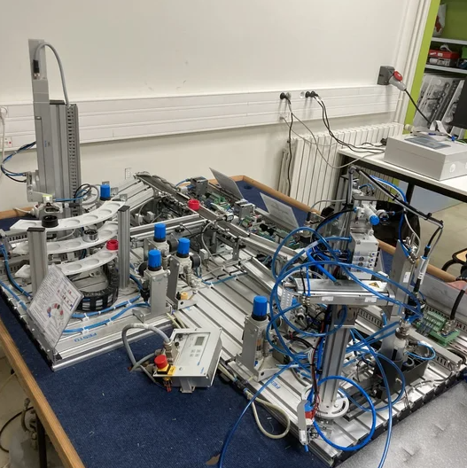
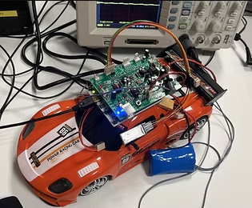
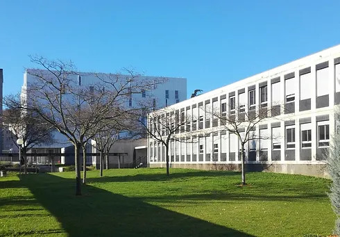
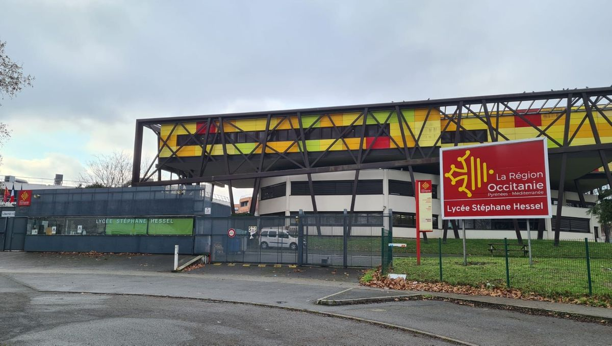
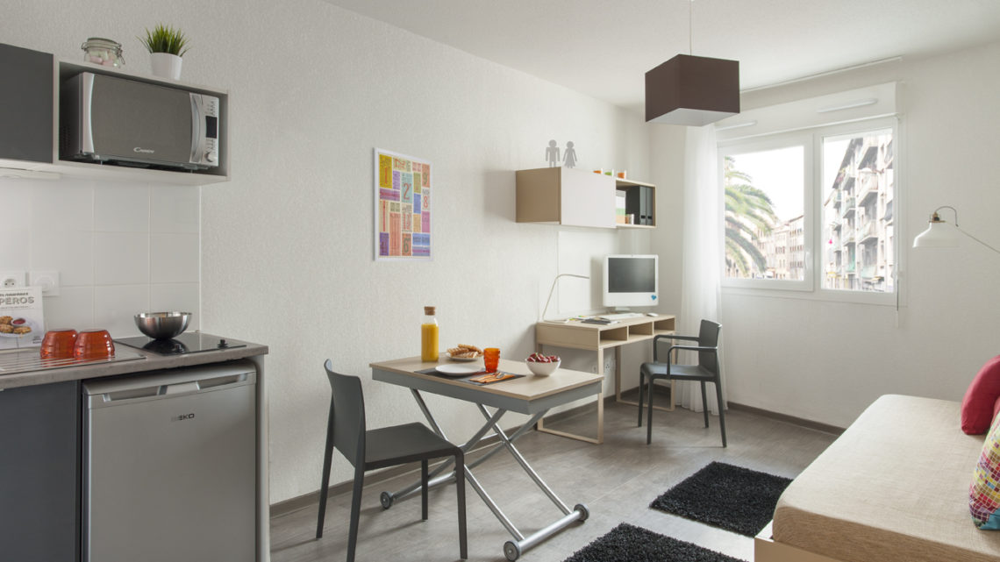
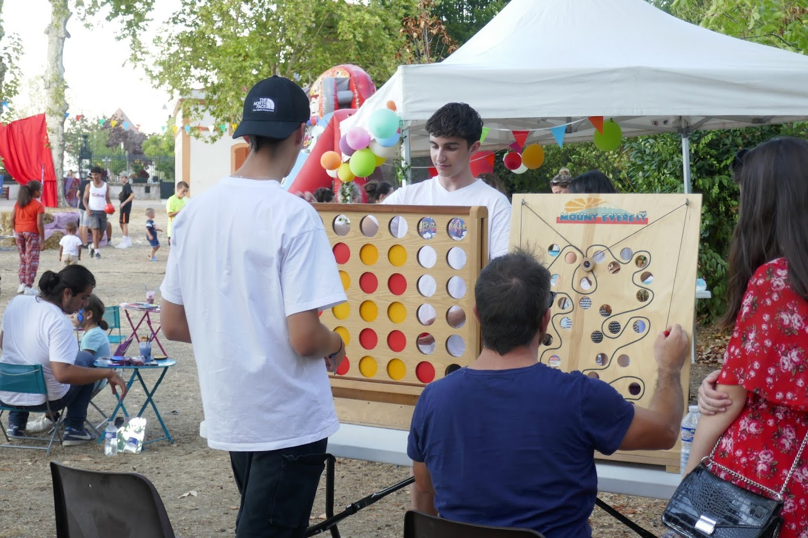
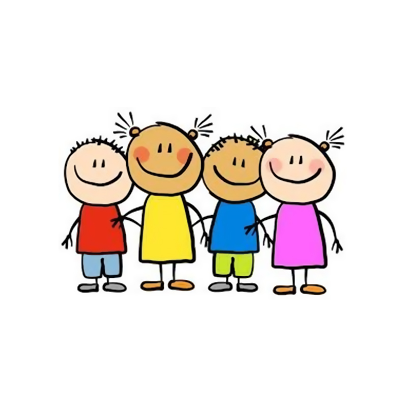

BUT GEII AII
IUT Paul Sabatier (2024-2026)
ETUDIANT GEII
J'ai 19 ans et je suis étudiant en deuxième année du BUT Génie Électrique et Informatique Industrielle à l'IUT de Toulouse.
Je vous propose de découvrir mon site portfolio qui regroupe mes projets, mes compétences et mes expériences.

Système de tri automatique par couleur via automate industriel.

Pilotage d'un véhicule autonome via une carte de gestion dédiée.

IUT Paul Sabatier (2024-2026)

Lycée Stéphane Hessel (2022-2024)
Chargé de la maintenance de logements étudiants :

Chargé d’aider à l’organisation d’un festival destiné aux jeunes :

En charge d’enfants (2 à 12 ans) :
